Diane and Terry's Odyssey¶
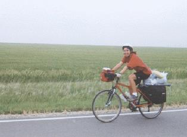
Diane and I left Yorktown, Virginia May 7th on our 4,586 mile ride to Astoria, Oregon. We arrived in Astoria, appropriately, on the 4th of July. Over 59 days we averaged about 78 miles a day. Our biggest day was 115 miles through Missouri and Kansas. Our shortest day was 36 miles (high winds in Wyoming). We did five centuries (days over 100 miles) during the trip. My top speed was 50.9 mph on the steep hills of Missouri, Diane's top speed was a few mph less since she doesn't have my weight.
The tour we did is the original Bike Centennial tour, which is famous in the bicycle touring world. Bike Centennial, who recently changed their name to Adventure Cycling, is a non profit service organization for recreational bicyclists. Since their incorporation in 1974 they have developed and mapped a nationwide network of bicycle touring routes. They are located in Missoula, Montana and can be contacted at (406)721-1776.
Day 1¶
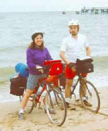 On our first day out of Yorktown, Virginia we got a late start, but still got in 70 miles. This was 10 miles more than we expected to do, due to a detour. Camping was free behind a Methodist Church. There weren't any showers, but there were restrooms with running water.
Day 2¶
The day started off looking like rain, but it never did. We were pretty tired after our first day, but we still managed to pound out another 70 miles. We ran into two other cycle tourists on the same route from New Zealand. Bryan, who is a pipe fitter and a native New Zealander and Brian who lives in New Zealand now, but was born in Australia. We rode with them for a while until they dropped off to camp. We rode on another 10 miles and free camped under some power lines near Lake Anna.
Day 3¶
We did 65 miles on our third day and camped at the Howard Johnsons in Charlottesville. We had some excellent Mexican food and did our laundry. The climb to Charlottesville was pretty steep, but it was great to have a hot shower.
Day 4¶
The climb out of Charlottesville was even steeper for our sore legs. We stopped in Afton at the famous "Cookie Lady". The "Cookie Lady" has been providing free cookies and peanut butter and jelly sandwiches for bicyclists on the tour for nearly 20 years. She wasn't home when we rode by, but she left out some cookies and she has a picnic table and water available. From Afton we continued up to the Blue Ridge Parkway. We did about 55 miles and stayed at a KOA. The KOA wasn't open for the season yet, but the owner let us stay anyway.
Day 5¶
We rode 70 miles of pleasant rolling hills to Camp Bethel. We were just a day or two behind the Tour Dupont for the past few days. Camp Bethel is great, facilities are excellent and it is only $4 a person. Bryan and Brian rolled into the campground late and we chatted with them for a while.
Day 6¶
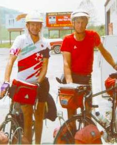 We started off in the morning riding with Bryan and Brian, but after a while we split up and we hammered out another 79 miles. The campground we found was just off Interstate 81 and it is a dump compared to Camp Bethel. We never did find the owner so we ended up staying for free. Finished the first of 12 maps in the tour.
Day 7¶
Diane's knee was really bothering her today, so we stopped to do laundry in Whytherville, Virginia. Ended up crashing at a motel near by after only 40 miles.
Day 8¶
Opened the door of the motel in the morning just in time to see Bryan and Brian riding past on the road. I yelled, but they didn't hear me. We got moving a bit late and stopped in Rural Retreat for breakfast. We met a women there that offered us a place to stay. She said to let any west bound people we ran into to stop by. We did a total of 65 rough miles with a climb past Mt Rogers over 3500 ft above sea level. After the climb we started a 15 mile descent. We free camped in past Damascus near a river. Late at night some people parked on the road above us and were hanging out (drinking beer I guess). They must have seen us, but thank God they didn't come down and hassle us. It wasn't a very restful sleep.
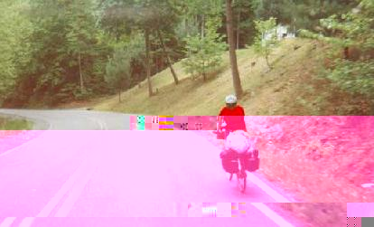
Day 9¶
Didn't get started until pretty late and stopped and a grocery store to "cook" breakfast. We ran out of fuel for our stove, so we heated grits and tea in the stores microwave. Bryan and Brian rode up while we were eating breakfast. They stayed in a crowded but nice hostel in Damascus, while we were trying to sleep down by the river listening to "Gimme One Step". We rode with them for the rest of the morning in light rain. After lunch, Bryan and Brian stopped and we continued on looking for some free camping, but the valley was very populated and populated by pretty rough people. We decided to head for Breaks Park, despite the now heavy rain. By the time we got to Breaks, we were absolutely soaked and fairly miserable. We decided to make a break for the "Gateway Motel" on the Virginia-Kentucky border since it was down hill and we were very wet. We flew down hill about two miles in the pouring rain at dusk and managed to get a room for only $25. Well worth it. The owner even let us use her dryer for free.
Day 10¶
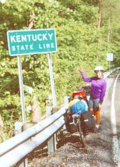 We still didn't have any fuel, so we used hot tap water to "cook" the instant grits and tea. Soon we were on the road and to the Kentucky border. A few miles over the border there was a turtle in the road. I turned around to move it when a pickup came down the road and ran it over. The rough start to the morning turned better when we found stove fuel in Elkhorn City. We did 68 miles and stayed in a nice youth hostel in Pippa Passes. I had just finished Asimov's "I Robot" and the women that ran the hostel was kind enough to give me Grisham's "The Firm". Pop fiction isn't my first choice, I prefer pop science fiction, but it has proved to be impossible to buy books in this area unless you like romance novels. It seems that only the women read in this area. Eastern Kentucky is beautiful, but coal mining is the main industry and the people are rough. The coal trucks are gigantic and unnerving as the fly past you with chunks of coal falling off the back.
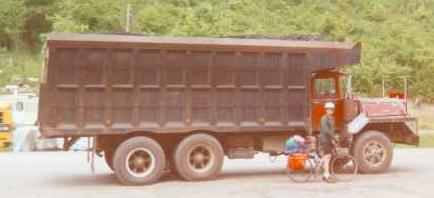
Day 11¶
The day after Pippa Passes was a short 55 mile one. We pulled into Core of Engineers campground at Buckhorn Dam with plenty of time to relax and walk around. Nice campground. Byran and Brian pulled in late after a long day for them with a shortcut that allowed them to catch up with us again.
Day 12¶
We said good-bye to Bryan and Brian in the morning for what would turn out to be the last time. We stopped for a real bad lunch (mayo on my hamburger) in Vincent, Kentucky. Scary town, apparently lots of unemployment. After Vincent, things turned better. Rolling hills, farm country. In the afternoon I saw a local farmer, about 35, pumping gas. At first I thought he had a cigarette in his mouth, but it turned out to be a tooth sticking out. Turned out he had very few of them left, but he was quite friendly. We talked for a bit. People in this farming area are more friendly and have more respect for the land than the miners in eastern Kentucky. In farm country the drivers are more courteous and there is less trash along the road. Tobacco is the big crop in the area. The barns are painted black and in May the tobacco plants are young. An 80+ mile day took us to Berea the end of our second map of twelve.
Day 13¶
Another 80+ mile day took us to Lincoln Homestead Park outside of Springfield, Kentucky. We rolled in about 8 and Jeff Van Somethingorother of Edison, NJ was already there. Chatty guy, but I guess if I was doing the tour solo, I would be a bit chatty when I ran into people. Turned out the local Baptist church was having a silent auction at the park center and Jeff and Diane joined in the fun. I opted to set up the tent and wash up. The terrain had been much easier with pleasant rolling hills. I joining the church group after the silent auction for some 7-up and excellent key lime pie. Diane bought a fruit basket which was handy.
Day 14¶
The next morning, a crew with lawn mowers and weed trimmers woke us early. I think part of the reason they were sent down was that Jeff had set up his tent on the tee off area of the third hole of the golf course on the park. We got up and put our stove together to heat up some oatmeal and tea. Jeff joins us and proceeds to open a can of hot beef tomales. He explains to us how he decide not to carry a stove to save weight as he eats the beef tomales out of the can and cold for breakfast. Sounds tasty doesn't it?
We said good-bye to Jeff and started riding. We stopped in Bardstown for lunch and continued for a total of 60+ miles to Hodgenville. We wandered around Lincolns Birth Place National Historic Site and then checked into a private campground near by.
Day 15¶
In the morning we said our good-byes to Jeff and rode hard to crank out some miles. In the morning we crossed into the central time zone so we had an "extra" hour. During our morning break I wrote some chalk messages on the road for Bryan and Brian and Jeff.
Toward the end of the day we got lost and stopped to ask a guy sitting on his porch directions. Fortunately, we were only about a mile out of our way. He invited us up for cup cakes and water which we were grateful for. He told his wife to get the cup cakes and water and she seemed a bit reluctant, but got us the cup cakes anyway. Very tasty. While we ate he told us about his experience in WW II. He claimed to be in Europe, Africa, and the Pacific. He told us about riding a "sharp humped" camel that took the hide off his behind. He also shared some racist and anti-Catholic jokes that were hard to follow. We thanked this strange man and his wife and rode on to Utica, a total of 105 miles for the day, our first century of the trip. It was a bit hilly for a century, but we felt good.
We camped in a school yard in Utica. There was a pavilion, picnic tables, and rest rooms there, but no shower or hot water. Some young boy asked us for some chili since his parents "never fed him". We shared.
Day 16¶
The next morning we were leisurely making breakfast and breaking camp when Diane noticed there was a ferry across the Ohio river that only ran to 6:00pm. We wanted to camp on the other side of the river since there wasn't much on the Kentucky side. We rushed after that and cranked out 85 miles and made the second to last ferry across the Ohio at about 5:50. Wouldn't have been bad if we hadn't been so sore from the day before. It was a great feeling to make the ferry and cross our second state line into Illinois.
The ferry took us to Cave in Rock, Illinois where we stopped for dinner at a local pizzeria. This dinner reaffirmed our belief that you can't buy a descent pizza outside of the NY/NJ area. After dinner we noticed that the City Hall was a tourist information center. We walked in and didn't find much tourist information, but we did meet four guys that were hanging out there. We hung out and bull shitted with them for a while and one guy, who was cutting his toe nails, made several racial slurs. I wasn't particularly surprised, but it is ironic that Kentucky and Illinois both make such proud claims to being the home of Abe Lincoln. To top off our pleasant stay in Cave in Rock, the campground didn't have flush toilets or showers. At least it was free.
Day 17¶
We took our time in the morning and checked out the "Cave in Rock". It was pretty neat. Nice and cool in the cave, but very hot out. We only did about 51 miles to a seedy camp ground on a farm in Simpson, IL. At least they had showers there. The highlight of the day was disturbing a hawk that was feeding on a snake. I didn't notice it until it started crashing through the trees carrying its dinner. I think it was a Red Tailed Hawk. We also stopped at a general store for some cool drinks. Tiny place jammed with stuff of all sorts. There were four guys just hanging out inside. We took our drinks outside and started talking with an older guy and a guy about my age outside. The younger guy was a laid off coal miner. Interesting people. Everyone chews tobacco. We did finally score some sun screen there after a three day search.
Day 18¶
We rode hard out of Simpson stopping for lunch in Carbondale which turned out to be a nice college town. We had some Mexican food and stopped at the "Bike Surgeon". The owner offered to put us up for the night, but we wanted to cover more ground. We rode to Chester, IL on the Mississippi River. After dinner at Pizza Hut we stayed at the beautiful Hi 3 Motel.
Day 19¶
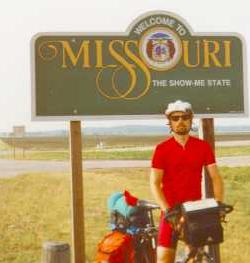 In the morning out of Chester we stopped at the statue of Popeye the sailer man. Chester is the home of the creator of Popeye and some of the characters in the strip are modeled after people that lived in the town. We crossed the Mississippi into Missouri and immediately noticed damage from last years floods. Not much was open near the river on the Missouri side, but we soon were climbing out of the flood plains.
Ran into some interesting cyclist going cross country West to East. The first people we have run into going the other way. We ran into a couple that were moteling it all the way and riding extremely light. They had a small pack on the back and that is it. No sleeping bag or tent. In fact I don't think they had more than 2 sets of clothes and maybe just one jacket. Interesting way to travel of course you can hammer out the miles if you are not carrying 40 pounds of equipment. They had been forced to hitch rides a couple of times to find shelter.
The other group we ran into was a group of guys also riding West to East, but they were only doing 1000 or so miles a summer. Most of them were clearly over forty.
From Chester we made it to Johnson's Shutins State Park. Real nice facilities at this park and clean. The forest and hills are beautiful.
Day 20¶
We took time in the morning to hike down the trail to the "shutins". The shutins were formed when an ancient lava flow formed rock binding the Black River. The rock shutins are the rapids, potholes, cliffs, and deep pools caused by this rock formation.
It is real tough to do big miles in this part of the country. The hills are very steep and there are lots of them. The Ozarks are one of the oldest mountain ranges in the world, so they are eroded into steep rocky hills. It was day 20 when I reached my top speed (50.9 mph) for the tour going down an extremely steep hill in Missouri. What an adrenaline rush.
We camped at Alley Springs, another nice state campground.
Day 21¶
We took time in the morning to check out Alley Springs Park. There is a mill house there that his bright red and converted into an interesting museum. After checking out the mill house we decided to check out the springs. Well it turns out the springs are right there. 81 million gallons of water a day just wells up out of the ground and they built the mill house right next to it. We took the short 1/3 mile hike around the spring, it was amazing. In Summersville, a town near by, a barber told us how divers recently discovered bottles of moonshine and a boat deep in the spring.
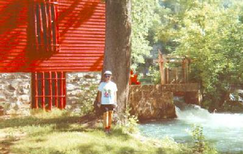 As we rode away from Alley Springs, the Ozarks slowly mellowed making our ride easier. We made it to Hartville around 7:30 in the evening with plans to camp in the city park. The first thing we noticed about the city park when we got there was there were pickup trucks parked up and down the street. Looked like a party was going on at a house near by. We tried not to make it obvious that we were planning on camping in the park, but we were hungry so we started cooking some chili. Finally a guy walked over to our table and explained that they were having a coon hunt tonight, so the trucks would all be gone by around 9. Some would return between 12 and 3 in the morning to check their standings. He said no one would give us any trouble. The guy we spoke to was pleasant enough, but beer and firearms make me nervous, so we tried to set up our tent out of view. As promised, they all moved out around 10. Except for one of the hunting dogs rummaging through our dirty dishes late at night, we barely heard them return.
Day 22¶
We ate at restaurants and stayed at a motel to make up for our restless sleep next to coon hunt headquarters.
Day 23¶
We were planning on doing big miles this day, but the morning did not look good. All morning there was a light rain. We stopped in Golden City, MO. at Cooky's Diner since it was highly recommend by people we had run into. There was a bit of a wait, but it was raining anyway. Since it was so crowded we ended up sharing a table with Frank and Hellen. Frank was a retired feed store owner and Hellen was a chatty house wife. They had children living all over the country and they made interesting lunch chat. The wait was worth it, because the food was excellent and the pie was delicious.
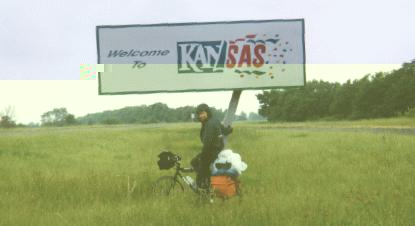 By the time we finished lunch, the rain had stopped, but it soon started up again. It was still raining when we hit the Kansas border, but soon after that it stopped for good. Surprisingly, Kansas had the best sign at the border of any of the states we rode through. We camped at the Girard City Park.
Day 24¶
From Girard we hammered out 111 miles, our second century of the tour, to Eureka, Kansas. We were able to crank out the high mileage despite temperatures over 95F. A couple times during the day Diane made some comments like "It sure is hot today." I responded with a questioning look, "Is it?" Meanwhile, I'm the one with a thermometer attached to my handlebar bag, so I knew how hot is really was.
Day 25¶
We moved out early the next day with a stop at Cassoday for lunch. We really had to stop in Cassoday since there were absolutely no services for the next forty miles. As it turned out, the diner was great. It was decorated totally with a cowboy theme and filled with several real cowboy/ranch types. The hamburgers were gigantic and the strawberry shortcake was absolutely fantastic.
About twenty miles into the dry stretch we ran into "Lisa" who was riding solo from San Fransico. She seemed a bit nervous and quiet until Diane caught up with me. Remarkable nerve for a woman to solo tour.
We made it to Heston, Kansas fairly late and stopped at Pizza Hut for dinner. The pizza and the extreme heat of the day caught up with me at night, making me feel very sick.
Day 26¶
I felt much better in the morning, but tired. We rode out of Heston a bit late but we were making good time. As we were riding through Buhler a guy pulled over and flagged us down. Turns out he was the retired postal carrier of Buhler and an avid cyclist. He was even wearing a tee shirt commemorating a post stamp for a Texas bicycle tour. He offered us cold drinks and a place to stay, which we had to decline since it was still early in the morning. He explained that he was delivering mail in Buhler back in 1976 and he started seeing cyclist riding through on the inaugural Bike Centennial transamerica ride. Curious, he started talking with the cyclist and was really taken with the idea of riding a bicycle cross country. Although he had never owned a bike before in his life and never ridden one, he bought one and learned to ride. After a few years of training and planning he rode the transamerica trail from one end to the other. Almost twenty years later he has ridden in almost every state in the union. After this interesting chat, we rode on to Hudson.
Day 27¶
We hit some rain in the morning so we stopped for leisurely breakfast. It was still raining lightly after breakfast, so we rode a bit and stopped in the Santa Fe Trail Museum. After the museum, things cleared up and we hammered big miles, our third century of the trip, to Ness City.
Day 28¶
From Ness City we rode to Tribune where we camped in the city park. When we found the park we noticed someone already had a tent set up and a bicycle. We stopped over and met Alan from Frisco, Co. He was soloing from Colorado to Virginia and then south to Florida with plans to scuba in Florida for a while.
Day 29¶
We woke up early hoping to catch breakfast in town. Turned out there weren't any restaurants in town, just lots of grocery stores, so we went to one and bought some food. Diane had a "breakfast pizza" which she regretted.
We weren't 15 miles out of town when I flatted thanks to a "Texas Tack" which is a cactus thorn. It took me almost an hour to fix it, very frustrating. We rode hard the rest of the day to make up for our slow start.
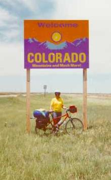 Since it was summer when the days are long, we were able to ride until late in the day. We made the Colorado state line and kept going in through the desert. One thing we often failed to keep track of was the day of the week. This particular evening was a Saturday night. People go out, have a few beers, and drive around. I see a GM stepside pickup flying down the road toward me doing well over 80. Apparently, the driver threw a handful of change at me since I was hit with a few coins. At that velocity, coins hurt. This put me in a real swell mood, but we shouldn't be riding late on Friday and Saturday nights.
We arrived at Haswell at about 8:30 and camped at the city park. I nice guy who worked at the local Coop and was also a fireman stopped by and chatted with us as we set up our tent and ate dinner. He seemed unphased by the vicious mosquitos of the area.
Day 30¶
Turned out Haswell wasn't the best place in the world to camp. The park was only a 100ft away from the an active railroad track. Three trains went past during the night and the cities sprinkler system went on twice during the night. We should have noticed that the grass was green in the park even though we were in the desert.
We rode on to Olney Springs and stopped at Dink's Cafe. Rumor on the road was free pie for cyclists at Dink's. Well the pie was excellent, but the food and service was poor. They did have a guest book for cyclists which was interesting.
After Dink's we rode on to Peublo and got a room at a Motel. Peublo is about the midpoint of the tour.
Day 31¶
We spent all morning in Peublo repairing our bikes and getting fresh supplies. The 2000 or so miles had put some wear and tear on our bikes. My rear tire was shot and Diane needed some gear adjustments. We rode out of Peublo in the early afternoon for Florence. We had Mexican food at the "Prickly Pear" and camped in the city park. Hitting some hills was a bit of a shock after so many days in the flats. Suddenly, I had to shift gears.
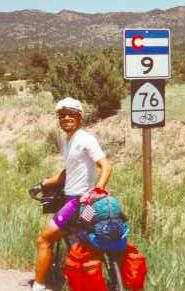
Day 32¶
We rode out of Florence to Hartsel, population 44. We free camped by the river.
Day 33¶
Camping at 9,000 feet proved to be very cold at night. We knocked the frost off our tent and went to the bar/cafe in Hartsel for breakfast. After breakfast, we started our final ascent of Hoosier Pass. 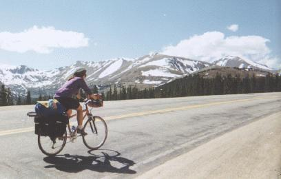 We paused for lunch in Fairplay and then continued the big climb. We made the top in the early afternoon on a beautiful sunny day. Hoosier was the highest point on the transamerica trail, 11,542', so it was a great feeling to be on top.
There were two women, Ann and Karen, who were also cycle touring at the top of the pass and oddly enough one of the women went to my high school. She was about 8 years older than me, so we didn't go at the same time, but my high school was very small. They both currently live in Colorado and were out on a five day tour.
After a pleasant rest at the top, we bundled up and started the descent. Descents in Colorado aren't as steep as they are in Missouri, but they are a lot longer. We flew down hill to Brekenridge where we jumped on a bike trail. We took the bike trail to Frisco and then to Silverthorn. About half of this 59 mile descent was on the along the bike trail. In Silverthorn we stopped for dinner at the "Sunshine Cafe" and stayed at the youth hostel.
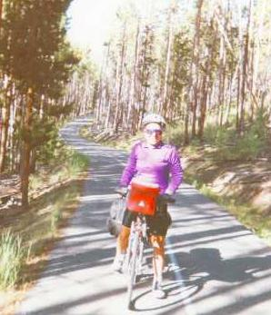
Day 34¶
We considered taking the day off and going to A-Basin to ski for the day, but the skiing didn't sound so hot and they were only open in the morning. One thing I wanted to do while we were in the area is have breakfast at the "Sunshine Cafe". They make wheat cakes that are light and fluffy and about an inch thick. I wasn't disappointed, they were great. I'd had them before when we were out in the area during ski trips.
After breakfast we started riding against strong winds, but mostly down hill. We caught up with Karen and Ann and had lunch with them at a reservoir. Turned out they were quite interesting people. Karen had solo hiked from Georgia to Vermont on the Appalachian Trail. Ann had worked for the last eight years in the National Outdoor Leadership School. We rode with them on and off all day until we hit Kremling where they were planning to stay. We rode on, a brutal climb, to the top of Muddy Pass a total of 84 miles for the day. We free camped in the open right on the side of the highway at about 8700 feet.
Day 35¶
Turned out to be real cold that night. I was wearing every piece of clothing I was carrying and I was still cold Not only were we short on water, it was frozen in our bottles. We were short on food as well. Diane and I split a peanut butter and jelly sandwich and a granola bar for breakfast. We had thirty miles to cover before we hit any services. We finally stopped at a stream and filled our water bottles from a stream and used some purification tablets.
On our way we ran into the an East bound cycle tourist. He was the first one that we have run into that started in Oregon. An eerie guy he seemed a bit dazed, maybe from cycling alone so long. He warned us about how horrible Wyoming was. We kind of figured after all we have been through so far, how bad could Wyoming be? He also told of how he camped in the city park in Rawlins and someone decided to drive around the park and shooting. We decided we would avoid camping in this park.
By the time we hit Walden, we were very hungry and dehydrated. Neither of us wanted to drink much of our "purified" water. We stopped at a cafe for lunch
After lunch we pulled into a supermarket to stock up and we ran into another east bound cycle tourist. He was in much better humor than the other one we ran into and he joked about the Wyoming state motto "Like no place on Earth". He said it really wasn't, it was more like you were on another planet.
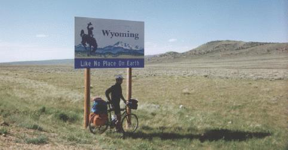
We made the Wyoming border and hammered out miles to Encampment where we ironically decided to motel it. Made soup for dinner in the laundry mat. Strange place, the motel owner was missing an arm and his poor wife had a cast on her leg. The main industry seems to be kiln drying wood, so the place smelled like burning wood.
Day 36¶
Spent the day fighting head winds, so it was a fairly short day to Rawlins. We had an excellent Mexican dinner at Rose's Lariat and since we heard such great things about the city park, we camped in a private campground.
Day 37¶
We hammered a big 93 mile day out of Rawlins. In the morning we ran into Mark who was riding from Boulder to Seattle. He was having knee problems, so he was taking it easy. We rode with him to a Hostel in Lamount where he was planning to stay. We made our lunch there and chatted with the owner of the hostel. She showed us her interesting collection of Indian artifacts she found during her walks in the desert.
We rode on to Jeffery City where we were planning on moteling it. It was pretty much a ghost town because of the closing of a local Uranium mine. We stopped at the local bar to get some cold pop and chatted with the bar tender and two Native Americans. One of the Native Americans had found a gigantic semi-precious stone of some sort. It was quite amazing.
We hung out in the post office for a while to escape the aggressive mosquitos in the area and then we waited around the motel for the owner to show up. The owner still hadn't shown up and it was getting late, so we decided to push on to a campground in Sweetwater. We made it before dark to Sweetwater and immediately put on our rain suits to keep the mosquitos away. We set up our tent and cooked inside to avoid them.
Another cyclist was in the campground. He was East bound and he started from Oregon. He was so excited to tell us about his 160+ mile day that he stood outside our tent, while we were inside, and told us about it. He said it was the biggest day of his life, the head wind we were fighting all day was pushing him along. He finally went to his tent after the mosquitos sucked him dry of conversation.
Day 38¶
From Sweetwater we rode 40 miles to Lander where we had to decide whether we should stay there for the night or make a big push. After Lander there was was no lodging for 60 miles across the Wind River Indian Reservation. Comforted by the knowledge that there was a motel at the end of the big 100 mile day, we decided to go for it. We hammered a long day and didn't get out of the Reservation until well after dark. When we got to the motel, no one was there, so we walked around back and set up camp. We where lucky enough to find access to a flush toilet, but no hot water or showers. This was by far our hardest century.
Day 39¶
High winds and rain tormented us through the night. I woke lying in a pool of water. The rains had stopped, but the winds were still strong. As we were packing up, the wind caught our tent and carried it across a field. My sleeping bag fell out in a mud puddle before the tent got caught on a fence. We packed up our soggy equipment and headed out. Despite the rough weather, we couldn't help notice the beautiful valley we were in as we cycled away.
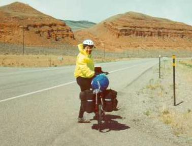 Strong winds continued all morning, so we took a long lunch in Dubois, hoping the winds would die down. They didn't so we continued on. Finally, we gave up and pulled into the Pinnacle Motel. I was hoping to catch the finally game of the Stanley Cup, but it turned out this motel didn't have a TV in the room. The owner was all uptight and very annoying. This was our shortest day by far, we only rode about 36 miles and it took us about 6 hours to do that. Stayed up late doing bike maintenance.
Day 40¶
Well, the wind died down, but the temperatures have dropped. We climbed Togwatee Pass and continued on to Teton National Park where we camped at Lizard Creek on Jackson Lake.
Day 41¶
We rode out of Lizard Creek with a beautiful view of the Tetons, but soon our view was marred by rain clouds. By the time we reached Yellowstone, it was raining steadily and the rained turned to snow as we hit higher elevations. We took a break in Grant Village to thaw out and dry up a bit. Once the freezing rain stopped we continued on, but soon the rain started up again. We decided to take a long lunch and do some shopping at Old Faithful. I bought a big fluffy pullover since I was tired of being cold. After my spending spree, it looked like the rain was going to hold off for a while, so we mounted up and continued on. We moved slowly stopping frequently to check out the geysers, hot springs, and boiling mud. As the day came to a close the clouds cleared off and we had a pleasant, peaceful ride to the campground at Madison Junction in the Northwestern corner of Yellowstone.
The biker/hiker rate in Yellowstone is a way low $2 and there were a lot of bikers staying there. There were a couple guys from Utica, NY, a couple Germans riding from Anchorage to Boston, and a Swiss guy (Steven) riding from Denver to Seattle.
Day 42¶
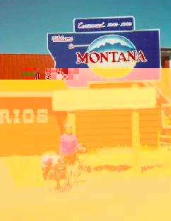 We rode out in the morning with the Steven. Communication was difficult, but he was interesting company. We parted ways when we reached West Yellowstone in Montana. We stocked up on "Montana Monster Cookies" and rode 89 miles to Ennis, Montana where we moteled it. It was good to get a hot shower since I hadn't had one in a couple days.
Day 43¶
We rode out of the cushy motel in Ennis to a cushy KOA campground. The Southwestern part of Montana is beautiful and the weather has been good. We had a big climb in the morning, but the afternoon was generally all downhill.
Day 44¶
Climbed Badger Pass and Big Hole Pass, but we didn't enjoy much of a descent. We still have Chief Joseph pass to climb before we start our big descent. We rode a total of 86 miles to May Creek US Forestry Campground. Services where primitive, but the forest is beautiful.
Day 45¶
We manage to ignore the hooting owls and howling Coyotes lurking around May Creek and get some sleep. After a long day of riding, nothing will disturb your sleep. From May Creek we continued our ascent of Chief Joseph Pass. The road is under repair and closed to cyclist, so we have to finish the climb up a narrow USFS gravel road. The gravel made our work harder, but it is nice to be away from passing cars.
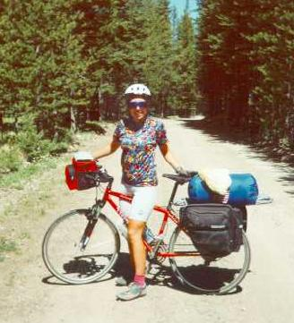 At the top we are at about 7,000 feet with a 13 mile descent ahead of us that will take us down to about 4,500 feet. The descent proves to be tricky on the gravel road with occasional wash outs. The hard braking necessary to slow our heavily loaded bikes forces us to stop and rest our arms once in a while. On the way down we run into some cycle tourist heading up the pass. We stop and chat with them and it turns out they are from Thialand. We chat for a while and continue on our way.
The gravel road took us quite a while to cover so we only ended up riding 56 miles for the day to Anglers Campground in Hamilton. We saw a moose, the first one we have seen during our ride. We have seen lots of prong horn antelope, elk, and mule deer through Colorado, Wyoming, and Montana.
Day 46¶
We rode 50 miles to Missoula, Montana and visit Adventure Cycling headquarters. They gave us some free cookies and we met some of the people that run things. We filled out a questionnaire and they took our picture for their photo archive.
We also stopped and had some excellent Middle Eastern food thanks to a tip from the folks from Thialand. We bought some supplies and headed out to the Round and Square Campground 25 miles out of Missoula. The campground was real nice and we got to watch to local Square Dance club rip it up.
Day 47¶
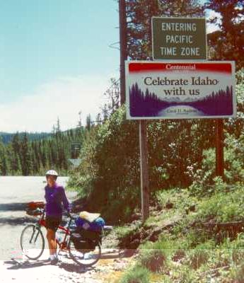 In the morning we climbed Lolo Pass which brought us into Idaho. Looking at the map, we noticed that we would be losing 4000 feet of vertical for the next 86 miles, probably the biggest and longest descent of the trip so far. On our way down we stopped at Weir Creek Hot Springs. We left our bikes in the weeds and hiked the mile in to the springs. There was and older couple and a younger couple with children all butt naked. There were also three guys there with their shorts on, drinking beer. We decided to join the guys in the pool where the water from the hot spring collected. From the pool the water ran over the edge of a cliff into a stream bellow. The water was real hot and took a bit of getting used to, but it was relaxing. After the hot springs, we rode on to Wilderness Gateway USFS Campground.
Day 48¶
The next day we continued our descent which turned out to be close to 100 miles. We started ascending after Kooskia, Idaho. On the way down we followed the Lochsa River. Services of any sort were very rare, but Ospreys were common.
During our descent we ran into Carlos and Dennis who were "riding" from Seattle to New York. These guys made me feel real stodgy. Carlos was a Rastafarian sort with big old dread locks. Dennis was a skin head punk type. The were hitching and riding off and on. They invited us to sit by the river and eat cherries and smoke a joint, but we respectfully declined.
Day 49¶
After our long descent, we started riding up along the Salmon River. We rode pretty late and stopped in New Meadows, Idaho to camp in the city park. It was Friday night, so people were driving around drunk honking there horn. Late at night, two women, walking home drunk from the bar threw pebbles at our tent. Turned out a whole group of bikers set up camp in the park late at night and they woke us early in the morning.
Day 50¶
We rode out of New Meadows through early and reached Hells Canyon late in the afternoon. Fortunately, it was overcast and fairly cool since Hells Canyon is renouned for high temperatures and humidity. We camped in McCommick Park under the Browalee Dam on the Oregon-Idaho border. Nice park, but it is a weekend so it is very crowded.
Day 51¶
We rode out of McCommick to Baker City in Eastern Oregon. The desert of eastern Oregon is, well, desert.
Day 52¶
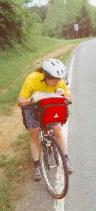 We rode over three passes all over 5000 feet a total of 84 miles for the day. Found a cheap motel with a tiny room in John Day. It had a tiny bathroom and the shower was in the bedroom area.
We didn't get out of Baker City until about 11:30 and didn't arrive in John Day until around 9:30. Out of Baker City we had a stretch of 70 miles with no services. The climbs were fairly tough, but through some beautiful forest areas.
Day 53¶
In the morning we stopped at a bike shop to pick up a new derailleur cable. Diane snapped one the day before, but fortunately I was carrying a spare.
We rode through "Picture Gorge" to the John Day Fossil Visitor Center National Monument. We stopped at the Visitor Center to get out of the heat. Interesting fossils and cool film produced by local high school students, lots of claymation.
We rode out of the National Monument to Mitchell a small town. No one seemed to be around, but the laundromat was open, so we started doing laundry. We were finishing up around 10 at night when three guys rolled in, two from Washington, DC and one from Chicago. The were on the bike route east bound and they had heard that we were allowed to used the shower in the laundromat. We hung out and chatted while we all took quick showers. After that, we headed over to the City Park and set up camp.
Day 54¶
We got an early start out of Mitchell for the climb over Ochoco Pass or Achoo Pass as I like to call it. After the pass it was a dull ride to Sisters, Oregon where we camped at the city park.
Day 55¶
We did big miles out of Sisters, a total of 95 miles to Springfield just east of Eugene. It was a long hard ride, but largely down hill. McKensie Pass was beautiful and we walked around some old lava flows on top of the pass. You could see Mt. Washington and Mt. Hood from the lookout. Even though it was warm and sunny there was some snow around and plenty of mosquitos. The forest was thick and the McKensie river was running fast. We treated ourselves to some ice cream sundaes in Springfield.
Day 56¶
Diane had shifting problems all day, but we made it to Monmouth. It's a holiday weekend, so all the motels are booked and there is no camping near by. We found B&B in town that happened to have a cancellation. Plush accommodations compared to what we have been finding.
Day 57¶
Turned out there was a campground just out of town. It wasn't marked on our maps. Oh well. The B&B was nice and breakfast was excellent.
We spent all morning repairing Diane's bike. The chain, middle chain ring, and cluster are so worn they aren't meshing properly anymore. Fortunately, a bike shop in town has some parts that will work, although the gear ratios are a bit close for touring.
We had lunch in town and rode 75 miles to Pacific City. We camped at a nice campground in the sand dunes. We fell asleep listening to the surf of the Pacific Ocean and our arguing neighbors. Our first view of the Pacific!
Day 58¶
We got a late start out of Pacific City and rode along the Ocean. The riding was slow with all the ups and downs. We past lots of touring cyclist, but didn't talk with any.
We rode 75 miles to Cannon Beach. I had a flat right outside of a tunnel we went through. A local stopped by while I was fixing my tire and told us about some camping area that we were never able to find. We ended up camping in Arcadia Beach, but we got to the campground so late that it was full. The owner let us set up camp on top of a hill in the woods.
Day 59¶
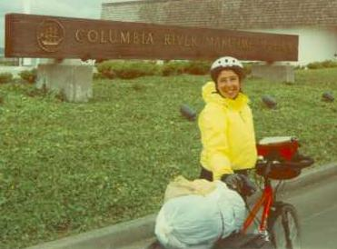 It was raining, but we didn't care. We only had 31 miles to do to get to Astoria. By the time we made it to the Maritime Museum, the rain stopped. We checked into a motel, cleaned up and went to a local bike shop to get some bike boxes. We spent the afternoon packing our bikes up and went to dinner at a nice sea food restaurant. The next day we rented a car, drove to Portland, and jumped on a plane home.